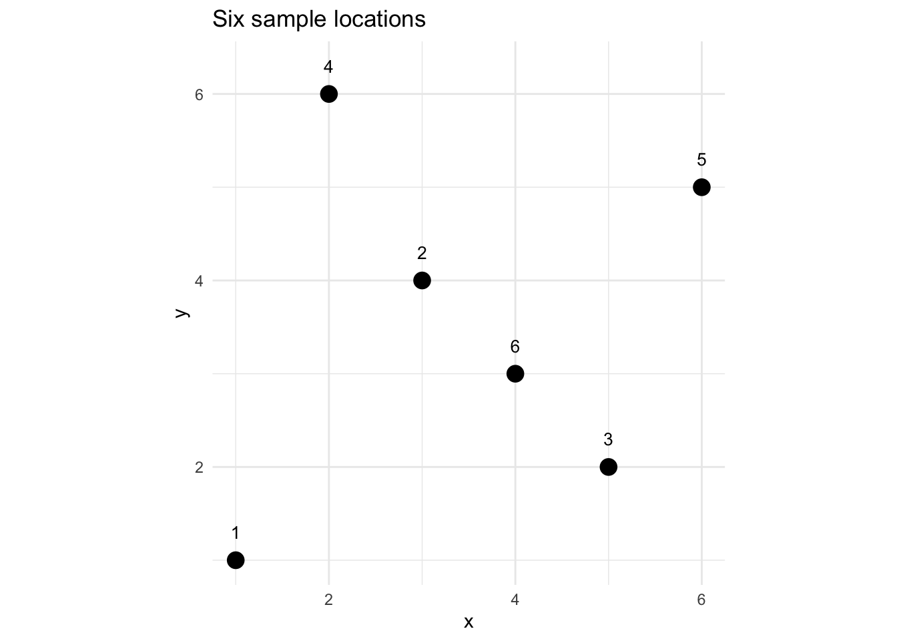

Code
library(tidyverse)
library(sf)Distance matrices show up everywhere in this course – in point pattern analysis, variograms, spatial weights, IDW, kriging, and nearest-neighbor analyses. You will use them so often and in so many different forms that it’s worth slowing down and really understanding what they are, how R stores them, and what they’re doing under the hood before you need to rely on them for something more complex.
None of it is hard. But the details matter more here, because a lot of subtle bugs in spatial analysis can come from misunderstanding the structure of a distance matrix.
You likely already know this, but let’s set up the notation properly because we’ll use it throughout. For two points \(i\) and \(j\) with coordinates \((x_i, y_i)\) and \((x_j, y_j)\), the Euclidean distance is:
\[d_{ij} = \sqrt{(x_j - x_i)^2 + (y_j - y_i)^2}\]
Nothing new here right? This is the Pythagorean theorem. We’re just being precise about the subscripts. The distance between point \(i\) and point \(j\) is \(d_{ij}\), and the full set of those distances for all pairs in a dataset is the distance matrix D.
Let’s make a small dataset to work with throughout this aside – six points in a hypothetical coordinate space.

dist() Actually ReturnsThe natural way to compute a distance matrix in R is dist():
1 2 3 4 5
2 3.605551
3 4.123106 2.828427
4 5.099020 2.236068 5.000000
5 6.403124 3.162278 3.162278 4.123106
6 3.605551 1.414214 1.414214 3.605551 2.828427Look carefully at what that prints. It’s a triangular table – only the lower half of what you might expect if you were thinking of a square matrix. That’s not a bug. It’s by design. But before getting into why, check the class of D:
It’s not a matrix – it’s a dist object. If you’ve read the Understanding Methods and Generics in R aside, you know that class determines how R behaves when you call functions on an object. Here, print(D) is actually calling print.dist() under the hood, which is why you get that tidy triangular display instead of a raw dump of numbers. The dist class is a compact, special-purpose way of storing pairwise distances – not a general-purpose matrix.
Here’s why that compactness makes sense. With \(n\) points, the full distance matrix would be \(n \times n\) – that’s 36 numbers for our 6-point dataset. But a lot of those numbers are redundant. Two things are always true:
That means we only need the lower triangle – \(n(n-1)/2\) unique values. For our 6 points that’s \(6 \times 5 / 2 = 15\) distances. R stores exactly those 15 numbers in the dist object rather than a full 36-element matrix. That’s fine for printing and for passing to functions that know how to handle the dist class – but it can matter a lot when you try to pass it to something that is expecting something that is class matrix. You’ll get used to converting to a matrix first:
1 2 3 4 5 6
1 0.000000 3.605551 4.123106 5.099020 6.403124 3.605551
2 3.605551 0.000000 2.828427 2.236068 3.162278 1.414214
3 4.123106 2.828427 0.000000 5.000000 3.162278 1.414214
4 5.099020 2.236068 5.000000 0.000000 4.123106 3.605551
5 6.403124 3.162278 3.162278 4.123106 0.000000 2.828427
6 3.605551 1.414214 1.414214 3.605551 2.828427 0.000000Check the class of Dmat vs D
With Dmat, you get the full \(n \times n\) symmetric matrix with zeros on the diagonal. You’ll be doing this as.matrix() conversion so often it’ll become muscle memory.
A few things to notice in this full matrix: - Rows and columns correspond to the same points in the same order as your data - It’s symmetric across the diagonal: Dmat[i,j] == Dmat[j,i] - The diagonal is all zeros
Once you have the full matrix, finding nearest neighbors is just a row-wise sorting problem. For each point (each row), you want to know which other point is closest – i.e., which column index has the smallest non-zero value.
The trick is to handle the diagonal. A zero on the diagonal will always “win” if you don’t deal with it, and every point would be its own nearest neighbor. Mask the diagonal with NA first:
1 2 3 4 5 6
2 6 6 2 6 2 So point 1’s nearest neighbor is point 2, point 2’s nearest neighbor is point 6, and so on. You can verify a few of these by eye from the plot above.
For \(k\) nearest neighbors, you sort each row and take the first \(k\) non-NA indices:
1 2 3 4 5 6
[1,] 2 6 6 2 6 2
[2,] 6 4 2 6 2 3The columns of nn2 are the point indices and the rows are the 1st and 2nd nearest neighbor for each. This is the conceptual core of what functions like spdep::knearneigh() are doing – we’ll use those in the main text, but now you know what’s happening inside.
Everything above assumes that the distance from point \(i\) to point \(j\) is the same as the distance from \(j\) to \(i\) – i.e., \(d_{ij} = d_{ji}\). For straight-line Euclidean distance that’s always true. But depending on what you mean by “distance,” it isn’t always.
If you work in streams or rivers, think about what distance means for an organism moving through the water. The straight-line distance between two sites might be 500 meters, but the effective distance – how hard it actually is to get from one place to the other – depends on which direction you’re traveling. Swimming downstream is easy; swimming upstream against the current is not. For a fish or an invertebrate, upstream and downstream are different functional distances, even between the same two sites.
The same idea applies in marine systems. Ocean currents can make travel in one direction much cheaper than the other. A larva drifting with a coastal current might easily reach a site 200 km away, while a larva trying to go the other direction faces a very different journey.
When distances are asymmetric like this, you can’t use a dist object – that class assumes symmetry by design. You represent asymmetric distances as a plain R matrix where M[i,j] is the cost of traveling from \(i\) to \(j\), and M[i,j] is not required to equal M[j,i].
Here’s a simple example. Imagine three sites along a stream where site 1 is downstream and site 3 is upstream. The straight-line distances between them are 300, 400, and 700 meters. But upstream travel is hard – let’s say it costs four times as much as the equivalent downstream leg.
# cost[i,j] = effective distance traveling FROM site i TO site j
# Sites: 1=downstream, 2=mid, 3=upstream
# Upstream travel (against current) penalized 4x
stream_cost <- matrix(c(
0, 300*4, 700*4, # from site 1: going up to 2 or 3 is hard
300, 0, 400*4, # from site 2: going down to 1 is easy, up to 3 is hard
700, 400, 0 # from site 3: going down to 1 or 2 is easy
), nrow=3, byrow=TRUE,
dimnames=list(c("down","mid","up"), c("down","mid","up")))
stream_cost down mid up
down 0 1200 2800
mid 300 0 1600
up 700 400 0The asymmetry is obvious in the numbers – traveling from down to up costs 2800 effective meters, while the return trip costs only 700. You can verify formally:
[1] FALSE[1] TRUEHow you model this in practice depends on the question. Sometimes you’ll use asymmetric cost matrices directly (e.g., in circuit theory or graph-based connectivity analyses). Other times you’ll take the average of the two directions as a symmetrized approximation. Neither is universally right – it depends on the biology or physics of your system.
A related idea: even when distances are symmetric, the straight line between two points might not be the meaningful measure of distance for your question.
Imagine two forest patches separated by 2 km of open agricultural land. The Euclidean distance is 2 km, but for a forest-dependent bird or mammal that avoids open habitat, the functional distance between those patches is much larger – or possibly infinite if the species won’t cross open ground at all. What matters ecologically is the path of least resistance through the landscape, not the crow-flies distance.
This is the idea behind least cost path (LCP) analysis. You define a cost surface – a raster where each cell has a value representing how difficult it is to move through that habitat type. Roads might be very costly. Dense forest might be cheap. Urban areas might be impassable. Then you find the path between two locations that minimizes accumulated cost. The resulting cost distance replaces Euclidean distance as your measure of connectivity.
A few things worth knowing about LCP distances:
gdistance package is the standard tool for this in R. It takes a cost raster, builds a transition matrix between neighboring cells, and then uses graph algorithms to find minimum cost paths between any pair of points.We won’t implement LCP analyses in this course, but you should know the concept exists and why it matters. When you’re thinking about habitat connectivity, dispersal corridors, or movement between patches, Euclidean distance is often a poor proxy for what’s actually constraining your organisms. Cost distances – even rough ones based on broad land cover classes – tend to do much better.
Here’s something that will eventually bite you if you’re not thinking about it. The number of pairwise distances grows as \(n(n-1)/2\), which feels abstract until you see the numbers:
n pairs
1 10 45
2 100 4,950
3 500 124,750
4 1000 499,500
5 5000 12,497,500
6 10000 49,995,000Ten thousand points – not an unusually large spatial dataset – gives you nearly 50 million pairwise distances. That’s a lot of numbers to compute and store, and dist() will try to hold all of them in memory at once. Let’s see how the size of the dist object scales:
n size
1 100 0.04 MB
2 500 1 MB
3 1000 4 MB
4 2000 15.99 MBYou can see the memory blowing up fast. At \(n = 2000\) you’re already into tens of megabytes for just the distance matrix. Scale that to a dense point cloud or a raster sample and you have a problem. When we get to geostatistics and spatial weights, keep this in mind. Packages like gstat and spdep are smart about this – they don’t always compute the full distance matrix – but it helps to know why.
sf::st_distance()In the toy examples above we used dist() on a plain data.frame of x and y coordinates. That works fine, but once your data are in an sf object – which they will be for most real analyses – the right tool is sf::st_distance().
Why use st_distance() instead of just pulling the coordinates out and passing them to dist()? Two reasons. First, st_distance() knows about the projection of your data and computes distances in the right units (meters, usually). Second, it returns a proper matrix, not a dist object, so you don’t need the as.matrix() step.
Let’s see both approaches on our toy dataset:
1 2 3
1 0.000 3.606 4.123
2 3.606 0.000 2.828
3 4.123 2.828 0.000Units: [m]
1 2 3
1 0.000 3.606 4.123
2 3.606 0.000 2.828
3 4.123 2.828 0.000The values match here because our toy coordinates are in a made-up Cartesian space. In practice, once your data have a real CRS, st_distance() is the right call. It also handles the case where you need distances between two different sets of points (e.g., sample locations to prediction locations) – just pass both objects as arguments: st_distance(samples_sf, predictions_sf).
You’ve probably heard “make sure your data are projected” enough times that it starts to sound like a ritual incantation. Here’s the concrete reason it matters for distance calculations.
Let’s place a few sample sites around the Mt. Baker area. We’ll compute distances from their raw lat/lon coordinates and then from their properly projected coordinates and see what happens.
First, the naive approach – just hand the lat/lon columns to dist():
1 2 3 4
1 0.000 0.568 0.760 0.273
2 0.568 0.000 0.394 0.779
3 0.760 0.394 0.000 0.861
4 0.273 0.779 0.861 0.000These numbers are in decimal degrees, which is not a unit of distance. The value of 0.568 between Bellingham and Glacier doesn’t mean 0.568 km, or 0.568 miles, or 0.568 anything useful. It’s a number that mixes together differences in longitude and differences in latitude, which are not the same physical distance – especially at 48°N where a degree of longitude is only about 74 km while a degree of latitude is about 111 km.
Now let’s do it properly. We’ll create an sf object and project to UTM Zone 10N (EPSG:32610), which puts everything in meters:
Units: [m]
Bellingham Glacier Concrete Anacortes
Bellingham 0.0 43.3 58.6 28.3
Glacier 43.3 0.0 41.1 65.5
Concrete 58.6 41.1 0.0 63.6
Anacortes 28.3 65.5 63.6 0.0Now we have real distances in kilometers. Bellingham to Glacier is about 43 km. Bellingham to Anacortes is about 28 km. These match what you’d get from a map.
Compare the two matrices directly and you’ll see that not only are the magnitudes different, the relative distances can shift too – which means that nearest-neighbor analyses, variogram bins, and spatial weights based on lat/lon distances will all be subtly wrong in ways that are hard to detect. Always project your data before computing distances.
Here’s a cheat sheet for some of the distance-related functions you’ll use in this course:
| Situation | Function | Returns |
|---|---|---|
Points in a data.frame, same CRS |
dist(coords) |
dist object (lower triangle) |
| Convert to indexable matrix | as.matrix(D) |
matrix |
Points in an sf object |
st_distance(sf_obj) |
matrix (with units) |
| Two different sets of points | st_distance(sf1, sf2) |
rectangular matrix |
| Distances in geostat code | fields::rdist(coords) |
matrix |
The fields::rdist() function appears in the kriging aside and a few other places. It’s essentially as.matrix(dist()) but faster for large \(n\), and it handles the two-set case like st_distance() does.